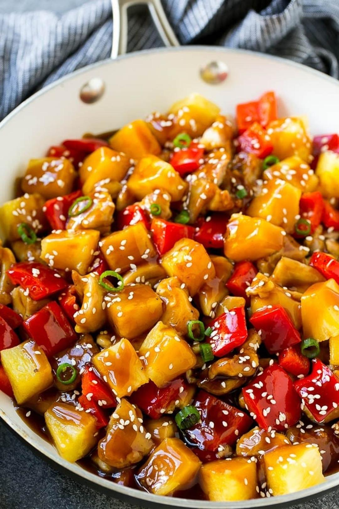

Pineapple Chicken

Tags: asian, chicken, pineapple, stir fry
Servings: 4 servings
Active Time: 10 minutes
Total Time: 30 minutes
Ingredients
- 2 teaspoons vegetable oil
- 1 pound boneless skinless chicken thighs (cut into 1 inch pieces)
- 1 red bell pepper (seeded. cored and cut into 1 inch pieces)
- 1 cup pineapple chunks (fresh or canned)
- 1 teaspoon minced garlic
- 1 teaspoon minced ginger
- 3/4 cup pineapple juice
- 1/4 cup low sodium soy sauce
- 1/3 cup low sodium chicken broth
- 1/3 cup hoisin sauce
- 1/4 cup brown sugar
- 2 teaspoons corn starch
- 2 teaspoons sesame seeds
- 1 tablespoon sliced green onions
- salt and pepper to taste
Directions
- 1 Heat the oil in a large pan over medium high heat. Season the chicken with salt and pepper to taste and add to the pan. 2 Cook the chicken for 6-8 minutes, stirring occasionally, until chicken is cooked through. 3 Add the red bell pepper and pineapple to the pan and cook for 4-5 minutes or until tender. Add the ginger and garlic and cook for 30 seconds more. 4 In a small bowl, whisk together the pineapple juice, soy sauce, chicken broth, hoisin sauce and brown sugar. 5 Add the sauce mixture to the pan and bring to a simmer. 6 Mix the corn starch with 1 tablespoon of cold water; stir until smooth. 7 Add the cornstarch mixture to the pan and stir to combine. Bring to a boil and cook for 1 minute or until sauce has just thickened. 8 Sprinkle with sesame seeds and green onions, then serve.